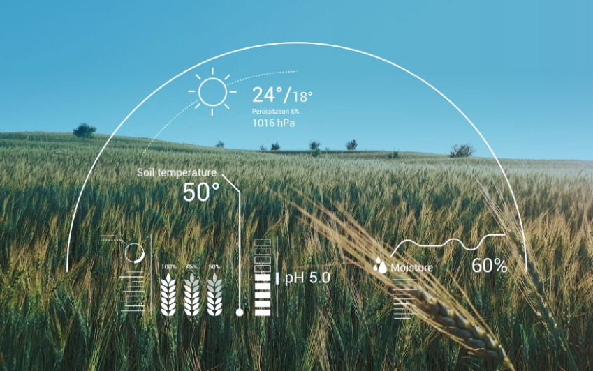

FarmEasy
AI assisted farming
Digital Farming and Precision Agriculture allow precise utilization of inputs like seed, water, pesticides, and fertilizers at the right time to the crop for maximizing productivity, quality and yields. Most of the farmers practice traditional farming patterns to decide crops to be cultivated in a field. Thus, the solution to this Challenge can be a crop recommendation system that helps farmers to decide the right crop to sow in their field and forecast the yield & revenue.

Crop Prediction
We will predict the most suitable crop for particular land based on soil contents and weather parameters such as Temperature, Humidity, soil PH and Rainfall.
Crop Information
All the crops which are used in the dataset are displayed here.